Introduction
Apache NiFi is a dataflow system based on the concepts of flow-based programming. It supports powerful and scalable directed graphs of data routing, transformation, and system mediation logic. NiFi has a web-based user interface for design, control, feedback, and monitoring of dataflows. It is highly configurable along several dimensions of quality of service, such as loss-tolerant versus guaranteed delivery, low latency versus high throughput, and priority-based queuing. NiFi provides fine-grained data provenance for all data received, forked, joined cloned, modified, sent, and ultimately dropped upon reaching its configured end-state.
See the Admin Guide for information about system requirements, installation, and configuration. Once NiFi is installed, use a supported web browser to view the User Interface. Supported web browsers include:
-
Internet Explorer 9+ (see note below)
-
Mozilla FireFox 24+
-
Google Chrome 36+
-
Safari 8
Note that there is a known issue in Internet Explorer (IE) 10 and 11 that can cause problems when moving items on the NiFi canvas. If you encounter this problem, we suggest using a browser other than IE. This known issue is described here: https://connect.microsoft.com/IE/Feedback/Details/1050422.
Terminology
DataFlow Manager: A DataFlow Manager (DFM) is a NiFi user who has permissions to add, remove, and modify components of a NiFi dataflow.
FlowFile: The FlowFile represents a single piece of data in NiFi. A FlowFile is made up of two components: FlowFile Attributes and FlowFile Content. Content is the data that is represented by the FlowFile. Attributes are characteristics that provide information or context about the data; they are made up of key-value pairs. All FlowFiles have the following Standard Attributes:
-
uuid: A unique identifier for the FlowFile
-
filename: A human-readable filename that may be used when storing the data to disk or in an external service
-
path: A hierarchically structured value that can be used when storing data to disk or an external service so that the data is not stored in a single directory
Processor: The Processor is the NiFi component that is used to listen for incoming data; pull data from external sources; publish data to external sources; and route, transform, or extract information from FlowFiles.
Relationship: Each Processor has zero or more Relationships defined for it. These Relationships are named to indicate the result of processing a FlowFile. After a Processor has finished processing a FlowFile, it will route (or “transfer”) the FlowFile to one of the Relationships. A DFM is then able to connect each of these Relationships to other components in order to specify where the FlowFile should go next under each potential processing result.
Connection: A DFM creates an automated dataflow by dragging components from the Components part of the NiFi toolbar to the canvas and then connecting the components together via Connections. Each connection consists of one or more Relationships. For each Connection that is drawn, a DFM can determine which Relationships should be used for the Connection. This allows data to be routed in different ways based on its processing outcome. Each connection houses a FlowFile Queue. When a FlowFile is transferred to a particular Relationship, it is added to the queue belonging to the associated Connection.
Controller Service: Controller Services are extension points that, after being added and configured by a DFM in the User Interface, will start up when NiFi starts up and provide information for use by other components (such as processors or other controller services). A common Controller Service used by several components is the StandardSSLContextService. It provides the ability to configure keystore and/or truststore properties once and reuse that configuration throughout the application. The idea is that, rather than configure this information in every processor that might need it, the controller service provides it for any processor to use as needed.
Reporting Task: Reporting Tasks run in the background to provide statistical reports about what is happening in the NiFi instance. The DFM adds and configures Reporting Tasks in the User Interface as desired. Common reporting tasks include the ControllerStatusReportingTask, MonitorDiskUsage reporting task, MonitorMemory reporting task, and the StandardGangliaReporter.
Funnel: A funnel is a NiFi component that is used to combine the data from several Connections into a single Connection.
Process Group: When a dataflow becomes complex, it often is beneficial to reason about the dataflow at a higher, more abstract level. NiFi allows multiple components, such as Processors, to be grouped together into a Process Group. The NiFi User Interface then makes it easy for a DFM to connect together multiple Process Groups into a logical dataflow, as well as allowing the DFM to enter a Process Group in order to see and manipulate the components within the Process Group.
Port: Dataflows that are constructed using one or more Process Groups need a way to connect a Process Group to other dataflow components. This is achieved by using Ports. A DFM can add any number of Input Ports and Output Ports to a Process Group and name these ports appropriately.
Remote Process Group: Just as data is transferred into and out of a Process Group, it is sometimes necessary to transfer data from one instance of NiFi to another. While NiFi provides many different mechanisms for transferring data from one system to another, Remote Process Groups are often the easiest way to accomplish this if transferring data to another instance of NiFi.
Bulletin: The NiFi User Interface provides a significant amount of monitoring and feedback about the current status of the application. In addition to rolling statistics and the current status provided for each component, components are able to report Bulletins. Whenever a component reports a Bulletin, a bulletin icon is displayed on that component. System-level bulletins are displayed on the Status bar near the top of the page. Using the mouse to hover over that icon will provide a tool-tip that shows the time and severity (Debug, Info, Warning, Error) of the Bulletin, as well as the message of the Bulletin. Bulletins from all components can also be viewed and filtered in the Bulletin Board Page, available in the Management Toolbar.
Template: Often times, a dataflow is comprised of many sub-flows that could be reused. NiFi allows DFMs to select a part of the dataflow (or the entire dataflow) and create a Template. This Template is given a name and can then be dragged onto the canvas just like the other components. As a result, several components may be combined together to make a larger building block from which to create a dataflow. These templates can also be exported as XML and imported into another NiFi instance, allowing these building blocks to be shared.
flow.xml.gz: Everything the DFM puts onto the NiFi User Interface canvas is written, in real time, to one file called the flow.xml.gz. This file is located in the nifi/conf directory. Any change made on the canvas is automatically saved to this file, without the user needing to click a "save" button. In addition, the user may create a back-up copy of this file at any time by selecting the Controller Settings button in the far-right section of the tool bar and clicking "Back-up flow" on the General tab. By default, this action saves a copy of the current flow in the nifi/conf/archive directory. See Controller Settings for a description of where the "Back-up flow" button may be found. (Note that in a NiFi Cluster, the NiFi Cluster Manager’s copy of this file is named flow.tar, whereas this file is still named flow.xml.gz on the nodes.)
NiFi User Interface
The NiFi User Interface (UI) provides mechanisms for creating automated dataflows, as well as visualizing, editing, monitoring, and administering those dataflows. The UI can be broken down into several segments, each responsible for different functionality of the application. This section provides screenshots of the application and highlights the different segments of the UI. Each segment is discussed in further detail later in the document.
When the application is started, the user is able to navigate to the User Interface by going to the default address of
http://<hostname>:8080/nifi in a web browser. There are no permissions configured by default, so anyone is
able to view and modify the dataflow. For information on securing the system, see the Systems Administrator guide.
When a DFM navigates to the UI for the first time, a blank canvas is provided on which a dataflow can be built:
Along the top of the of the screen is a toolbar that contains several of these segments. To the left is the Components Toolbar. This toolbar consists of the different components that can be dragged onto the canvas.
Next to the Components Toolbar is the Actions Toolbar. This toolbar consists of buttons to manipulate the existing components on the canvas. To the right of the Actions Toolbar is the Search Toolbar. This toolbar consists of a single Search field that allows users to easily find components on the canvas. Users are able to search by component name, type, identifier, configuration properties, and their values.
The Management Toolbar sits to the right-hand side of the screen. This toolbar consists of buttons that are used by DFMs to manage the flow as well as by administrators who manage user access and configure system properties, such as how many system resources should be provided to the application.
Next, we have segments that provide capabilities to easily navigate around the canvas. On the left-hand side is a toolbar that provides the ability to pan around the canvas and zoom in and out. On the right-hand side is a “Birds-Eye View” of the dataflow. This provides a high-level view of the dataflow and allows the user to quickly and easily pan across large portions of the dataflow. Along the top of the screen is a trail of breadcrumbs. As users navigate into and out of Process Groups, the breadcrumbs show the depth in the flow and each Process Group that was entered to reach this depth. Each of the Process Groups listed in the breadcrumbs is a link that will take you back up to that level in the flow.
Below the breadcrumbs lives the Status bar. The Status bar provides information about how many Processors exist on the canvas in each state (Stopped, Running, Invalid, Disabled), how many Remote Process Groups exist on the canvas in each state (Transmitting, Not Transmitting), the number of threads that are currently active in the flow, the amount of data that currently exists in the flow, and the timestamp at which all of this information was last refreshed. If there are any System-Level bulletins, these are shown in the Status bar as well. Additionally, if the instance of NiFi is clustered, the Status bar shows how many nodes are in the cluster and how many are currently connected.
Logging In
If NiFi is configured to run securely, users will be able to request access to the DataFlow. For information on configuring NiFi to run securely, see the Admin Guide. If NiFi supports anonymous access, users will be given access accordingly and given an option to log in.
Clicking the login link will open the log in page. If the user is logging in with their username/password they will be presented with a form to do so. If NiFi is not configured to support anonymous access and the user is logging in with their username/password, they will be immediately sent to the login form bypassing the canvas.
Once the user has logged in or if they are accessing NiFi using a client certificate loaded in their browser, they will be prompted to request access by submitting a justification if this is the first time they have accessed this NiFi. Fill in an optional justification that the administrator will review while granting the account access. If NiFi is not configured to support anonymous access and the user is using a client certificate, they will be immediately sent to the form to request access bypassing the canvas and login form.
Press Submit to send the account request. If NiFi supports anonymous access, the user can continue accessing the DataFlow by closing the login page. Returning to the login page will check the status of the account request. If access has been granted, press the home link or reload the page to assume the new roles.
Building a DataFlow
A DFM is able to build an automated dataflow using the NiFi User Interface (UI). Simply drag components from the toolbar to the canvas, configure the components to meet specific needs, and connect the components together.
Adding Components to the Canvas
In the User Interface section above outlined the different segments of the UI and pointed out a Components Toolbar. This section looks at each of the Components in that toolbar:
Processor: The Processor is the most commonly used component, as it is responsible for data ingress, egress, routing, and manipulating. There are many different types of Processors. In fact, this is a very common Extension Point in NiFi, meaning that many vendors may implement their own Processors to perform whatever functions are necessary for their use case. When a Processor is dragged onto the canvas, the user is presented with a dialog to choose which type of Processor to use:
In the top-right corner, the user is able to filter the list based on the Processor Type or the Tags associated with a Processor.
Processor developers have the ability to add Tags to their Processors. These tags are used in this dialog for filtering and are
displayed on the left-hand side in a Tag Cloud. The more Processors that exist with a particular Tag, the larger the Tag appears
in the Tag Cloud. Clicking a Tag in the Cloud will filter the available Processors to only those that contain that Tag. If multiple
Tags are selected, only those Processors that contain all of those Tags are shown. For example, if we want to show only those
Processors that allow us to ingest data via HTTP, we can select both the http Tag and the ingest Tag:
Clicking the Add button or double-clicking on a Processor Type will add the selected Processor to the canvas at the
location that it was dropped.
Note: For any component added to the canvas, it is possible to select it with the mouse and move it anywhere on the canvas. Also, it is possible to select multiple items at once by either holding down the Shift key and selecting each item or by holding down the Shift key and dragging a selection box around the desired components.
Once a Processor has been dragged onto the canvas, the user may interact with it by right-clicking on the Processor and selecting an option from context menu.
The following options are available:
-
Configure: This option allows the user to establish or change the configuration of the Processor. (See Configuring a Processor.)
-
Start or Stop: This option allows the user to start or stop a Processor; the option will be either Start or Stop, depending on the current state of the Processor.
-
Stats: This option opens a graphical representation of the Processor’s statistical information over time.
-
Upstream connections: This option allows the user to see and "jump to" upstream connections that are coming into the Processor. This is particularly useful when processors connect into and out of other Process Groups.
-
Downstream connections: This option allows the user to see and "jump to" downstream connections that are going out of the Processor. This is particularly useful when processors connect into and out of other Process Groups.
-
Usage: This option takes the user to the Processor’s usage documentation.
-
Change color: This option allows the user to change the color of the Processor, which can make the visual management of large flows easier.
-
Center in view: This option centers the view of the canvas on the given Processor.
-
Copy: This option places a copy of the selected Processor on the clipboard, so that it may be pasted elsewhere on the canvas by right-clicking on the canvas and selecting Paste. The Copy/Paste actions also may be done using the keystrokes Ctrl-C (Command-C) and Ctrl-V (Command-V).
-
Delete: This option allows the DFM to delete a Processor from the canvas.
Input Port: Input Ports provide a mechanism for transferring data into a Process Group. When an Input Port is dragged onto the canvas, the DFM is prompted to name the Port. All Ports within a Process Group must have unique names.
All components exist only within a Process Group. When a user initially navigates to the NiFi page, the user is placed in the Root Process Group. If the Input Port is dragged onto the Root Process Group, the Input Port provides a mechanism to receive data from remote instances of NiFi via Site-to-Site. In this case, the Input Port can be configured to restrict access to appropriate users, if NiFi is configured to run securely. For information on configuring NiFi to run securely, see the Admin Guide.
Output Port: Output Ports provide a mechanism for transferring data from a Process Group to destinations outside of the Process Group. When an Output Port is dragged onto the canvas, the DFM is prompted to name the Port. All Ports within a Process Group must have unique names.
If the Output Port is dragged onto the Root Process Group, the Output Port provides a mechanism for sending data to remote instances of NiFi via Site-to-Site. In this case, the Port acts as a queue. As remote instances of NiFi pull data from the port, that data is removed from the queues of the incoming Connections. If NiFi is configured to run securely, the Output Port can be configured to restrict access to appropriate users. For information on configuring NiFi to run securely, see the Admin Guide.
Process Group: Process Groups can be used to logically group a set of components so that the dataflow is easier to understand and maintain. When a Process Group is dragged onto the canvas, the DFM is prompted to name the Process Group. All Process Groups within the same parent group must have unique names. The Process Group will then be nested within that parent group.
Once a Process Group has been dragged onto the canvas, the user may interact with it by right-clicking on the Process Group and selecting an option from context menu.
The following options are available:
-
Configure: This option allows the user to establish or change the configuration of the Process Group.
-
Enter group: This option allows the user to enter the Process Group. It is also possible to double-click on the Process Group to enter it.
-
Start: This option allows the user to start a Process Group.
-
Stop: This option allows the user to stop a Process Group.
-
Stats: This option opens a graphical representation of the Process Group’s statistical information over time.
-
Upstream connections: This option allows the user to see and "jump to" upstream connections that are coming into the Process Group.
-
Downstream connections: This option allows the user to see and "jump to" downstream connections that are going out of the Process Group.
-
Center in view: This option centers the view of the canvas on the given Process Group.
-
Copy: This option places a copy of the selected Process Group on the clipboard, so that it may be pasted elsewhere on the canvas by right-clicking on the canvas and selecting Paste. The Copy/Paste actions also may be done using the keystrokes Ctrl-C (Command-C) and Ctrl-V (Command-V).
-
Delete: This option allows the DFM to delete a Process Group.
Remote Process Group: Remote Process Groups appear and behave similar to Process Groups. However, the Remote Process Group (RPG) references a remote instance of NiFi. When an RPG is dragged onto the canvas, rather than being prompted for a name, the DFM is prompted for the URL of the remote NiFi instance. If the remote NiFi is a clustered instance, the URL that should be used is the URL of the remote instance’s NiFi Cluster Manager (NCM). When data is transferred to a clustered instance of NiFi via an RPG, the RPG it will first connect to the remote instance’s NCM to determine which nodes are in the cluster and how busy each node is. This information is then used to load balance the data that is pushed to each node. The remote NCM is then interrogated periodically to determine information about any nodes that are dropped from or added to the cluster and to recalculate the load balancing based on each node’s load. For more information, see the section on Site-to-Site.
Once a Remote Process Group has been dragged onto the canvas, the user may interact with it by right-clicking on the Remote Process Group and selecting an option from context menu.
The following options are available:
-
Configure: This option allows the user to establish or change the configuration of the Remote Process Group.
-
Remote Ports: This option allows the user to see input ports and/or output ports that exist on the remote instance of NiFi that the Remote Process Group is connected to. Note that if the Site-to-Site configuration is secure, only the ports that the connecting NiFi has been given accessed to will be visible.
-
Enable transmission: Makes the transmission of data between NiFi instances active. (See Remote Process Group Transmission )
-
Disable transmission: Disables the transmission of data between NiFi instances.
-
Stats: This option opens a graphical representation of the Remote Process Group’s statistical information over time.
-
Upstream connections: This option allows the user to see and "jump to" upstream connections that are coming into the Remote Process Group.
-
Downstream connections: This option allows the user to see and "jump to" downstream connections that are going out of the Remote Process Group.
-
Refresh: This option refreshes the view of the status of the remote NiFi instance.
-
Go to: This option opens a view of the remote NiFi instance in a new tab of the browser. Note that if the Site-to-Site configuration is secure, the user must have access to the remote NiFi instance in order to view it.
-
Center in view: This option centers the view of the canvas on the given Remote Process Group.
-
Copy: This option places a copy of the selected Process Group on the clipboard, so that it may be pasted elsewhere on the canvas by right-clicking on the canvas and selecting Paste. The Copy/Paste actions also may be done using the keystrokes Ctrl-C (Command-C) and Ctrl-V (Command-V).
-
Delete: This option allows the DFM to delete a Remote Process Group from the canvas.
Funnel: Funnels are used to combine the data from many Connections into a single Connection. This has two advantages. First, if many Connections are created with the same destination, the canvas can become cluttered if those Connections have to span a large space. By funneling these Connections into a single Connection, that single Connection can then be drawn to span that large space instead. Secondly, Connections can be configured with FlowFile Prioritizers. Data from several Connections can be funneled into a single Connection, providing the ability to Prioritize all of the data on that one Connection, rather than prioritizing the data on each Connection independently.
Template: Templates can be created by DFMs from sections of the flow, or they can be imported from other dataflows. These Templates provide larger building blocks for creating a complex flow quickly. When the Template is dragged onto the canvas, the DFM is provided a dialog to choose which Template to add to the canvas:
Clicking the drop-down box shows all available Templates. Any Template that was created with a description will show a question mark icon, indicating that there is more information. Hovering over the icon with the mouse will show this description:
Label: Labels are used to provide documentation to parts of a dataflow. When a Label is dropped onto the canvas,
it is created with a default size. The Label can then be resized by dragging the handle in the bottom-right corner.
The Label has no text when initially created. The text of the Label can be added by right-clicking on the Label and
choosing Configure...
Configuring a Processor
To configure a processor, right-click on the Processor and select the Configure... option from the context menu. The configuration dialog is opened with four
different tabs, each of which is discussed below. Once you have finished configuring the Processor, you can apply
the changes by clicking the Apply button or cancel all changes by clicking the Cancel button.
Note that after a Processor has been started, the context menu shown for the Processor no longer has a Configure...
option but rather has a View Configuration option. Processor configuration cannot be changed while the Processor is
running. You must first stop the Processor and wait for all of its active tasks to complete before configuring
the Processor again.
Settings Tab
The first tab in the Processor Configuration dialog is the Settings tab:
This tab contains several different configuration items. First, it allows the DFM to change the name of the Processor. The name of a Processor by default is the same as the Processor type. Next to the Processor Name is a checkbox, indicating whether the Processor is Enabled. When a Processor is added to the canvas, it is enabled. If the Processor is disabled, it cannot be started. The disabled state is used to indicate that when a group of Processors is started, such as when a DFM starts an entire Process Group, this (disabled) Processor should be excluded.
Below the Name configuration, the Processor’s unique identifier is displayed along with the Processor’s type. These values cannot be modified.
Next are two dialogues for configuring ‘Penalty duration’ and ‘Yield duration’. During the normal course of processing a piece of data (a FlowFile), an event may occur that indicates that the data cannot be processed at this time but the data may be processable at a later time. When this occurs, the Processor may choose to Penalize the FlowFile. This will prevent the FlowFile from being Processed for some period of time. For example, if the Processor is to push the data to a remote service, but the remote service already has a file with the same name as the filename that the Processor is specifying, the Processor may penalize the FlowFile. The ‘Penalty duration’ allows the DFM to specify how long the FlowFile should be penalized. The default value is 30 seconds.
Similarly, the Processor may determine that some situation exists such that the Processor can no longer make any progress, regardless of the data that it is processing. For example, if a Processor is to push data to a remote service and that service is not responding, the Processor cannot make any progress. As a result, the Processor should ‘yield,’ which will prevent the Processor from being scheduled to run for some period of time. That period of time is specified by setting the ‘Yield duration.’ The default value is 1 second.
The last configurable option on the left-hand side of the Settings tab is the Bulletin level. Whenever the Processor writes to its log, the Processor also will generate a Bulletin. This setting indicates the lowest level of Bulletin that should be shown in the User Interface. By default, the Bulletin level is set to WARN, which means it will display all warning and error-level bulletins.
The right-hand side of the Settings tab contains an ‘Auto-terminate relationships’ section. Each of the Relationships that is defined by the Processor is listed here, along with its description. In order for a Processor to be considered valid and able to run, each Relationship defined by the Processor must be either connected to a downstream component or auto-terminated. If a Relationship is auto-terminated, any FlowFile that is routed to that Relationship will be removed from the flow and its processing considered complete. Any Relationship that is already connected to a downstream component cannot be auto-terminated. The Relationship must first be removed from any Connection that uses it. Additionally, for any Relationship that is selected to be auto-terminated, the auto-termination status will be cleared (turned off) if the Relationship is added to a Connection.
Scheduling Tab
The second tab in the Processor Configuration dialog is the Scheduling Tab:
The first configuration option is the Scheduling Strategy. There are three options for scheduling components:
-
Timer driven: This is the default mode. The Processor will be scheduled to run on a regular interval. The interval at which the Processor is run is defined by the ‘Run schedule’ option (see below).
-
Event driven: When this mode is selected, the Processor will be triggered to run by an event, and that event occurs when FlowFiles enter Connections feeding this Processor. This mode is currently considered experimental and is not supported by all Processors. When this mode is selected, the ‘Run schedule’ option is not configurable, as the Processor is not triggered to run periodically but as the result of an event. Additionally, this is the only mode for which the ‘Concurrent tasks’ option can be set to 0. In this case, the number of threads is limited only by the size of the Event-Driven Thread Pool that the administrator has configured.
-
CRON driven: When using the CRON driven scheduling mode, the Processor is scheduled to run periodically, similar to the Timer driven scheduling mode. However, the CRON driven mode provides significantly more flexibility at the expense of increasing the complexity of the configuration. This value is made up of six fields, each separated by a space. These fields include:
-
Seconds
-
Minutes
-
Hours
-
Day of Month
-
Month
-
Day of Week
-
Year
The value for each of these fields should be a number, range, or increment. Range here refers to a syntax of <number>-<number>. For example,the Seconds field could be set to 0-30, meaning that the Processor should only be scheduled if the time is 0 to 30 seconds after the minute. Additionally, a value of
*indicates that all values are valid for this field. Multiple values can also be entered using a,as a separator:0,5,10,15,30. An increment is written as <start value>/<increment>. For example, settings a value of0/10for the seconds fields means that valid values are 0, 10, 20, 30, 40, and 50. However, if we change this to5/10, valid values become 5, 15, 25, 35, 45, and 55.For the Month field, valid values are 1 (January) through 12 (December).
For the Day of Week field, valid values are 1 (Sunday) through 7 (Saturday). Additionally, a value of
Lmay be appended to one of these values to indicate the last occurrence of this day in the month. For example,1Lcan be used to indicate the last Monday of the month. -
Next, the Scheduling Tab provides a configuration option named ‘Concurrent tasks.’ This controls how many threads the Processor will use. Said a different way, this controls how many FlowFiles should be processed by this Processor at the same time. Increasing this value will typically allow the Processor to handle more data in the same amount of time. However, it does this by using system resources that then are not usable by other Processors. This essentially provides a relative weighting of Processors — it controls how much of the system’s resources should be allocated to this Processor instead of other Processors. This field is available for most Processors. There are, however, some types of Processors that can only be scheduled with a single Concurrent task.
The “Run schedule” dictates how often the Processor should be scheduled to run. The valid values for this field depend on the selected
Scheduling Strategy (see above). If using the Event driven Scheduling Strategy, this field is not available. When using the Timer driven
Scheduling Strategy, this value is a time duration specified by a number followed by a time unit. For example, 1 second or 5 mins.
The default value of 0 sec means that the Processor should run as often as possible as long as it has data to process. This is true
for any time duration of 0, regardless of the time unit (i.e., 0 sec, 0 mins, 0 days). For an explanation of values that are
applicable for the CRON driven Scheduling Strategy, see the description of the CRON driven Scheduling Strategy itself.
The right-hand side of the tab contains a slider for choosing the ‘Run duration.’ This controls how long the Processor should be scheduled to run each time that it is triggered. On the left-hand side of the slider, it is marked ‘Lower latency’ while the right-hand side is marked ‘Higher throughput.’ When a Processor finishes running, it must update the repository in order to transfer the FlowFiles to the next Connection. Updating the repository is expensive, so the more work that can be done at once before updating the repository, the more work the Processor can handle (Higher throughput). However, this means that the next Processor cannot start processing those FlowFiles until the previous Process updates this repository. As a result, the latency will be longer (the time required to process the FlowFile from beginning to end will be longer). As a result, the slider provides a spectrum from which the DFM can choose to favor Lower Latency or Higher Throughput.
Properties Tab
The Properties Tab provides a mechanism to configure Processor-specific behavior. There are no default properties. Each type of Processor must define which Properties make sense for its use case. Below, we see the Properties Tab for a RouteOnAttribute Processor:
This Processor, by default, has only a single property: ‘Routing Strategy.’ The default value is ‘Route on Property name.’ Next to
the name of this property is a small question-mark symbol (
 ). This help symbol is seen in other places throughout the User Interface, and it indicates that more information is available.
Hovering over this symbol with the mouse will provide additional details about the property and the default value, as well as
historical values that have been set for the Property.
). This help symbol is seen in other places throughout the User Interface, and it indicates that more information is available.
Hovering over this symbol with the mouse will provide additional details about the property and the default value, as well as
historical values that have been set for the Property.
Clicking on the value for the property will allow a DFM to change the value. Depending on the values that are allowed for the property, the user is either provided a drop-down from which to choose a value or is given a text area to type a value:
In the top-right corner of the tab is a button for adding a New Property. Clicking this button will provide the DFM with a dialog to enter the name and value of a new property. Not all Processors allow User-Defined properties. In processors that do not allow them, the Processor becomes invalid when User-Defined properties are applied. RouteOnAttribute, however, does allow User-Defined properties. In fact, this Processor will not be valid until the user has added a property.
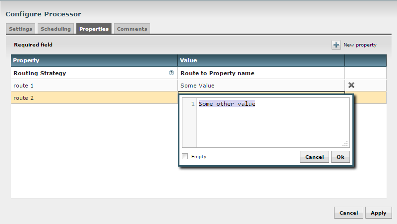
Note that after a User-Defined property has been added, an icon will appear on the right-hand side of that row ( ). Clicking this button will remove the User-Defined property from the Processor.
Some processors also have an Advanced User Interface (UI) built into them. For example, the UpdateAttribute processor has an Advanced UI. To access the Advanced UI, click the Advanced button that appears at the bottom of the Configure Processor window. Only processors that have an Advanced UI will have this button.
Some processors have properties that refer to other components, such as Controller Services, which also need to be configured. For example, the GetHTTP processor has an SSLContextService property, which refers to the StandardSSLContextService controller service. When DFMs want to configure this property but have not yet created and configured the controller service, they have the option to create the service on the spot, as depicted in the image below. For more information about configuring Controller Services, see the Controller Services and Reporting Tasks section.
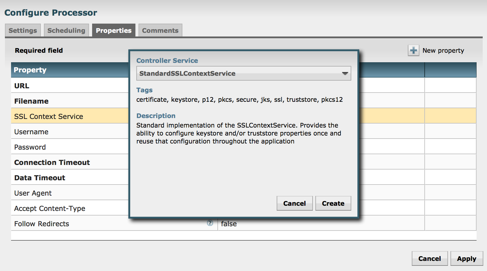
Additional Help
The user may access additional documentation about each Processor’s usage by right-clicking on the Processor and then selecting ‘Usage’ from the context menu. Alternatively, clicking the ‘Help’ link in the top-right corner of the User Interface will provide a Help page with all of the documentation, including usage documentation for all the Processors that are available. Clicking on the desired Processor in the list will display its usage documentation.
Controller Services and Reporting Tasks
While DFMs have the ability to create Controller Services from the Configure Processor window, there is also a central place within the User Interface for adding and configuring both Controller Services and Reporting Tasks. To get there, click on the Controller Settings button in the Management section of the toolbar.
Controller Settings
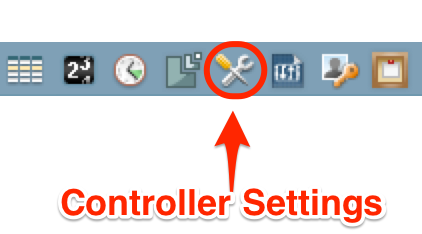
The Controller Settings window has three tabs across the top: General, Controller Services, and Reporting Tasks. The General tab is for settings that pertain to general information about the NiFi instance. For example, here, the DFM can provide a unique name for the overall dataflow, as well as comments that describe the flow. Be aware that this information is visible to any other NiFi instance that connects remotely to this instance (using Remote Process Groups, a.k.a., Site-to-Site).
The General tab also provides settings for the overall maximum thread counts of the instance, as well as the ability to click "Back-up flow" to create a backup copy of the current flow, which is saved by default in the /conf/archive directory.
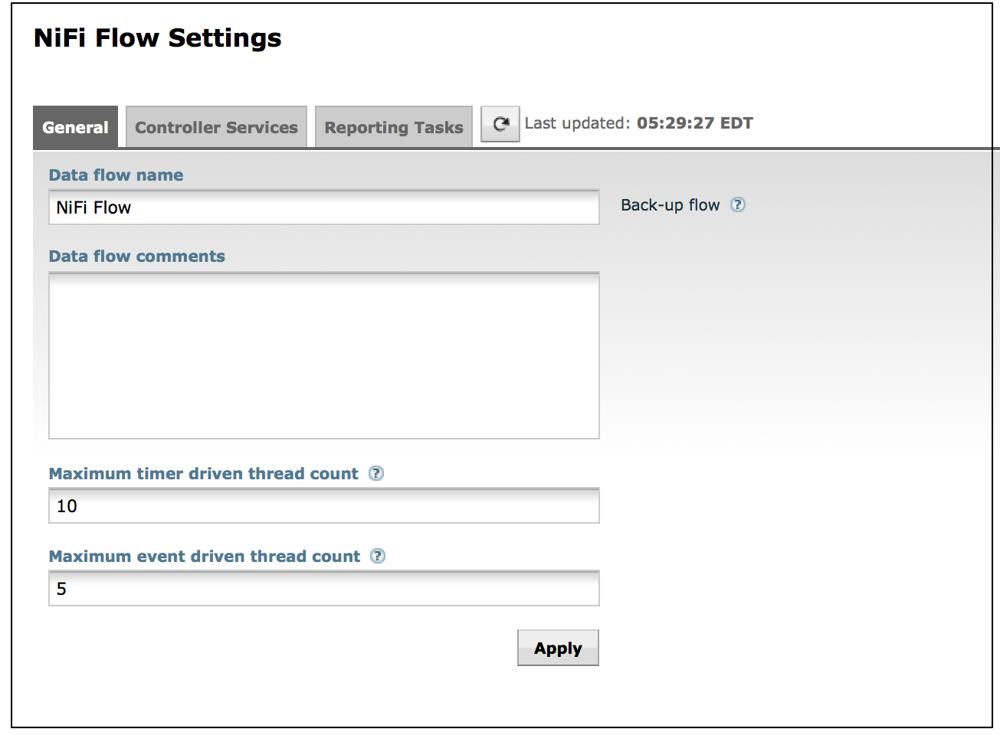
To the right of the General tab is the Controller Services tab. From this tab, the DFM may click the "+" button in the upper-right corner to create a new Controller Service.
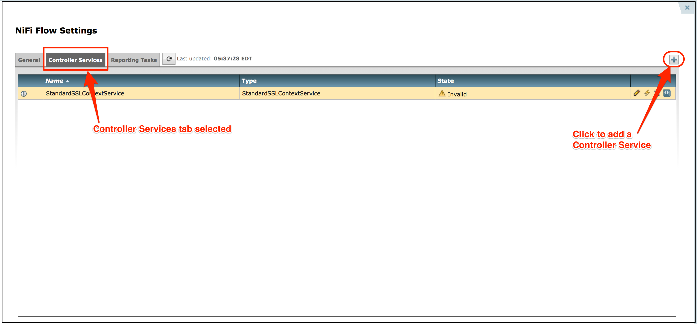
The Add Controller Service window opens. This window is similar to the Add Processor window. It provides a list of the available Controller Services on the right and a tag cloud, showing the most common category tags used for Controller Services, on the left. The DFM may click any tag in the tag cloud in order to narrow down the list of Controller Services to those that fit the categories desired. The DFM may also use the Filter field at the top of the window to search for the desired Controller Service. Upon selecting a Controller Service from the list, the DFM can see a description of the the service below. Select the desired controller service and click Add, or simply double-click the name of the service to add it.
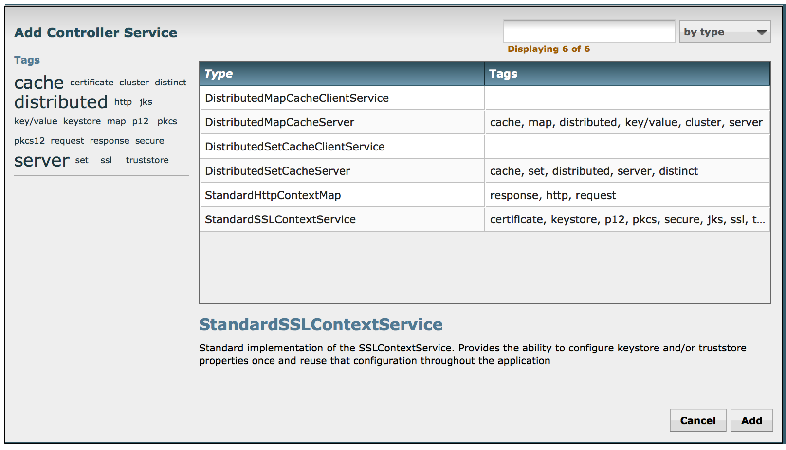
Once a Controller Service has been added, the DFM may configure it by clicking the Edit button (pencil icon) in the far-right column. Other buttons in this column include the Enable button (to enable a configured service), the Remove button, and the Usage button, which links to the documentation for the particular Controller Service.
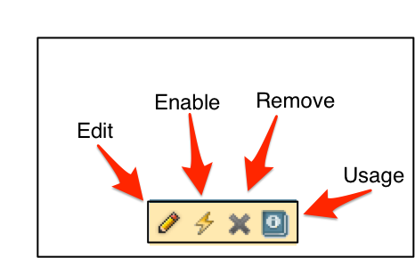
When the DFM clicks the Edit button, a Configure Controller Service window opens. It has three tabs: Settings, Properties, and Comments. This window is similar to the Configure Processor window. The Settings tab provides a place for the DFM to give the Controller Service a unique name (if desired). It also lists the UUID for the service and provides a list of other components (processors or other controller services) that reference the service.
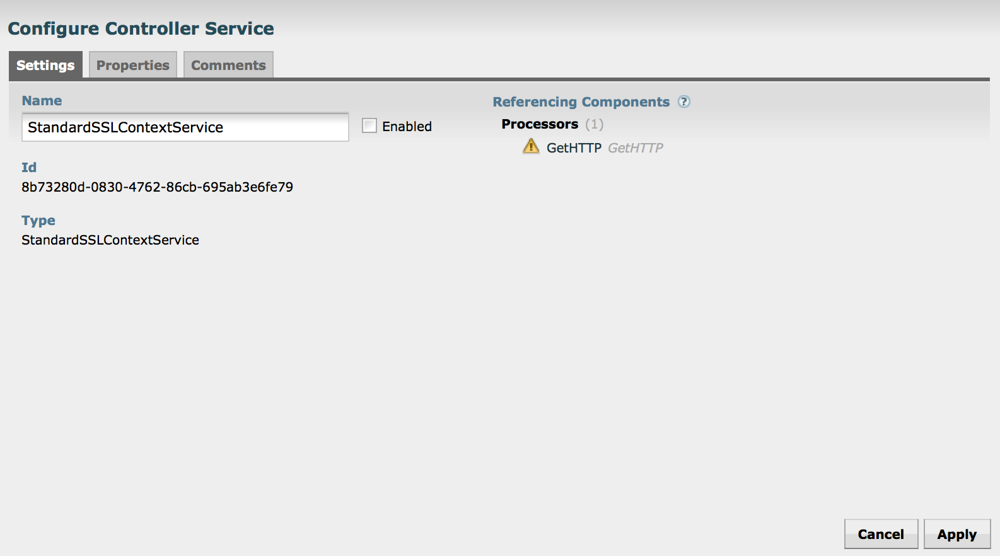
The Properties tab lists the various properties that apply to the particular controller service. As with configuring processors, the DFM may hover the mouse over the question mark icons to see more information about each property.
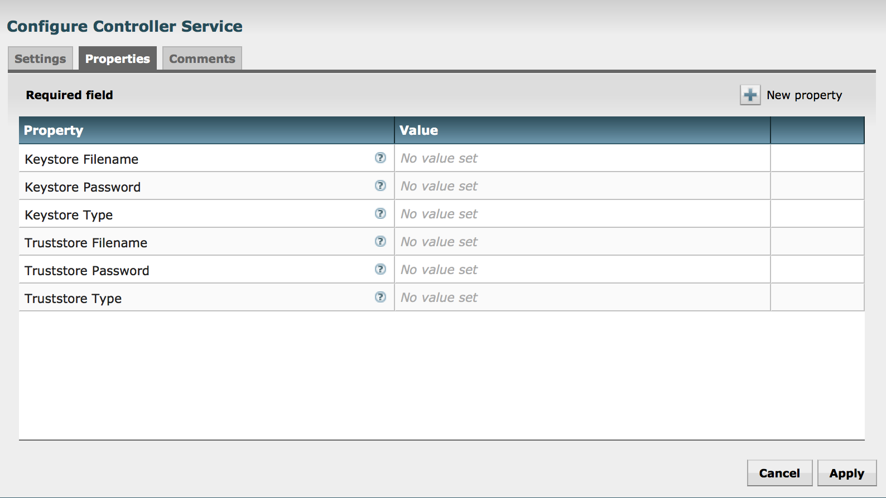
The Comments tab is just an open-text field, where the DFM may include comments about the service. After configuring a Controller Service, click the Apply button to apply the configuration and close the window, or click the Cancel button to cancel the changes and close the window.
Note that after a Controller Service has been configured, it must be enabled in order to run. Do this using the Enable button in the far-right column of the Controller Services tab of the Controller Settings window. Then, in order to modify an existing/running controller service, the DFM needs to stop/disable it (as well as all referencing processors, reporting tasks, and controller services). Rather than having to hunt down each component that is referenced by that controller service, the DFM has the ability to stop/disable them when disabling the controller service in question. Likewise, when enabling a controller service, the DFM has the option to start/enable all referencing processors, reporting tasks, and controller services.
The Reporting Tasks tab behaves similarly to the Controller Services tab. The DFM has the option to add Reporting Tasks and configure them in the same way as Controller Services.
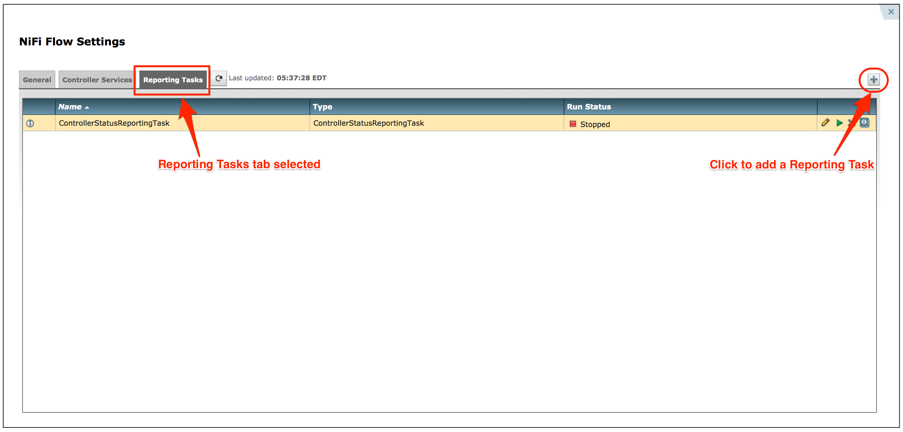
Once a Reporting Task has been added, the DFM may configure it by clicking the Edit (pencil icon) in the far-right column. Other buttons in this column include the Start button, Remove button, and Usage button, which links to the documentation for the particular Reporting Task.
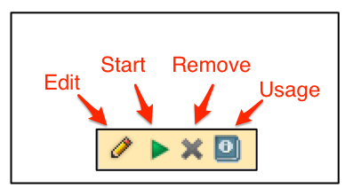
When the DFM clicks the Edit button, a Configure Reporting Task window opens. It has three tabs: Settings, Properties, and Comments. This window is also similar to the Configure Processor window. The Settings tab provides a place for the DFM to give the Reporting Task a unique name (if desired). It also lists a UUID for the Reporting Task and provides settings for the task’s Scheduling Strategy and Run Schedule (similar to the same settings in a processor). The DFM may hover the mouse over the question mark icons to see more information about each setting.
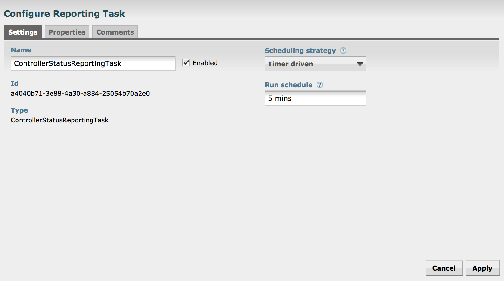
The Properties tab for a Reporting Task lists the properties that may be configured for the task. The DFM may hover the mouse over the question mark icons to see more information about each property.
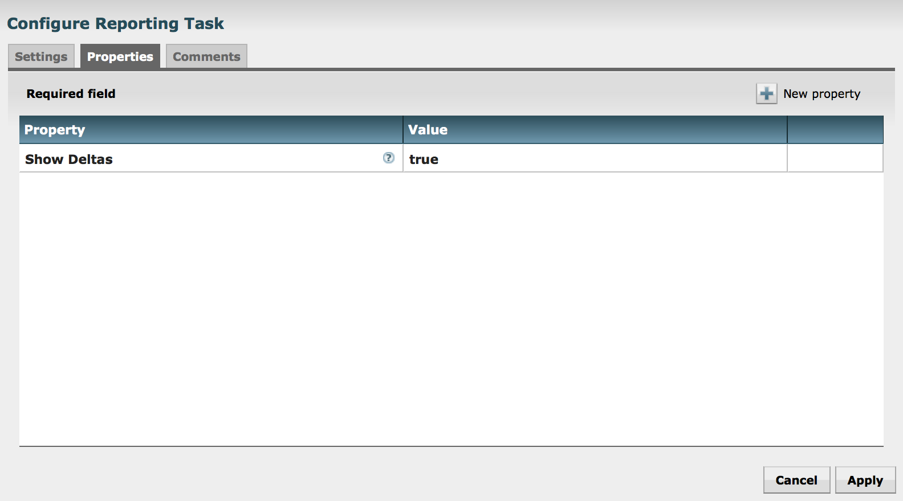
The Comments tab is just an open-text field, where the DFM may include comments about the task. After configuring the Reporting Task, click the Apply button to apply the configuration and close the window, or click Cancel to cancel the changes and close the window.
When you want to run the Reporting Task, click the Start button in the far-right column of the Reporting Tasks tab.
Connecting Components
Once processors and other components have been added to the canvas and configured, the next step is to connect them to one another so that NiFi knows what to do with each FlowFile after it has been processed. This is accomplished by creating a Connection between each component. When the user hovers the mouse over the center of a component, a new Connection icon ( ) appears:
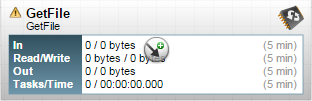
The user drags the Connection bubble from one component to another until the second component is highlighted. When the user releases the mouse, a ‘Create Connection’ dialog appears. This dialog consists of two tabs: ‘Details’ and ‘Settings’. They are discussed in detail below. Note that it is possible to draw a connection so that it loops back on the same processor. This can be useful if the DFM wants the processor to try to re-process FlowFiles if they go down a failure Relationship. To create this type of looping connection, simply drag the connection bubble away and then back to the same processor until it is highlighted. Then release the mouse and the same Create Connection dialog appears.
Details Tab
The Details Tab of the Create Connection dialog provides information about the source and destination components, including the component name, the component type, and the Process Group in which the component lives:
Additionally, this tab provides the ability to choose which Relationships should be included in this Connection. At least one Relationship must be selected. If only one Relationship is available, it is automatically selected.
Note: If multiple Connections are added with the same Relationship, any FlowFile that is routed to that Relationship will automatically be ‘cloned’, and a copy will be sent to each of those Connections.
Settings
The Settings Tab provides the ability to configure the Connection’s name, FlowFile expiration, Back Pressure thresholds, and Prioritization:
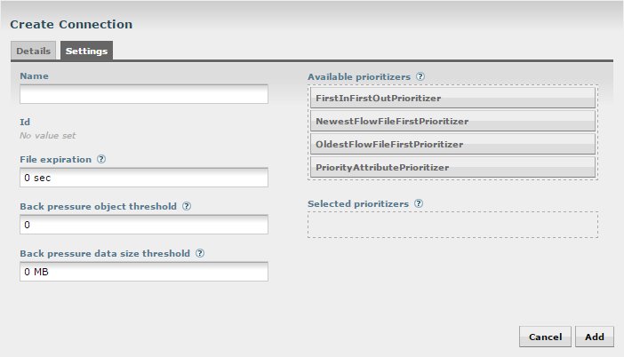
The Connection name is optional. If not specified, the name shown for the Connection will be names of the Relationships that are active for the Connection.
File expiration is a concept by which data that cannot be processed in a timely fashion can be automatically removed from the flow.
This is useful, for example, when the volume of data is expected to exceed the volume that can be sent to a remote site.
In this case, the expiration can be used in conjunction with Prioritizers to ensure that the highest priority data is
processed first and then anything that cannot be processed within a certain time period (one hour, for example) can be dropped. The expiration period is based on the time that the data entered the NiFi instance. In other words, if the file expiration on a given connection is set to 1 hour, and a file that has been in the NiFi instance for one hour reaches that connection, it will expire. The default
value of 0 sec indicates that the data will never expire. When a file expiration other than 0 sec is set, a small clock icon appears on the connection label, so the DFM can see it at-a-glance when looking at a flow on the canvas.
NiFi provides two configuration elements for Back Pressure. These thresholds indicate how much data should be
allowed to exist in the queue before the component that is the source of the Connection is no longer scheduled to run.
This allows the system to avoid being overrun with data. The first option provided is the “Back pressure object threshold.”
This is the number of FlowFiles that can be in the queue before back pressure is applied. The second configuration option
is the “Back pressure data size threshold.”
This specifies the maximum amount of data (in size) that should be queued up before
applying back pressure. This value is configured by entering a number followed by a data size (B for bytes, KB for
kilobytes, MB for megabytes, GB for gigabytes, or TB for terabytes).
The right-hand side of the tab provides the ability to prioritize the data in the queue so that higher priority data is processed first. Prioritizers can be dragged from the top (‘Available prioritizers’) to the bottom (‘Selected prioritizers’). Multiple prioritizers can be selected. The prioritizer that is at the top of the ‘Selected prioritizers’ list is the highest priority. If two FlowFiles have the same value according to this prioritizer, the second prioritizer will determine which FlowFile to process first, and so on. If a prioritizer is no longer desired, it can then be dragged from the ‘Selected prioritizers’ list to the ‘Available prioritizers’ list.
The following prioritizers are available:
-
FirstInFirstOutPrioritizer: Given two FlowFiles, the on that reached the connection first will be processed first.
-
NewestFlowFileFirstPrioritizer: Given two FlowFiles, the one that is newest in the dataflow will be processed first.
-
OldestFlowFileFirstPrioritizer: Given two FlowFiles, the on that is oldest in the dataflow will be processed first. This is the default scheme that is used if no prioritizers are selected.
-
PriorityAttributePrioritizer: Given two FlowFiles that both have a "priority" attribute, the one that has the highest priority value will be processed first. Note that an UpdateAttribute processor should be used to add the "priority" attribute to the FlowFiles before they reach a connection that has this prioritizer set. Values for the "priority" attribute may be alphanumeric, where "a" is a higher priority than "z", and "1" is a higher priority than "9", for example.
Note: After a connection has been drawn between two components, the connection’s configuration may be changed, and the connection may be moved to a new destination; however, the processors on either side of the connection must be stopped before a configuration or destination change may be made.
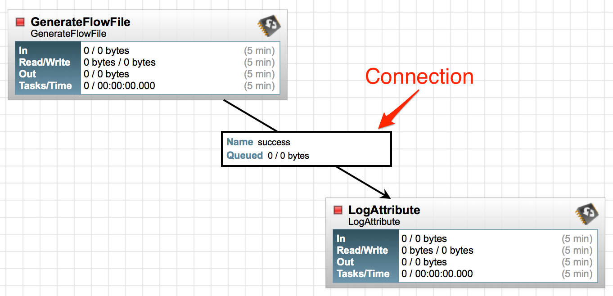
To change a connection’s configuration or interact with the connection in other ways, right-click on the connection to open the connection context menu.
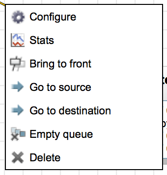
The following options are available:
-
Configure: This option allows the user to change the configuration of the connection.
-
Stats: This option opens a graphical representation of the connection’s statistical information over time.
-
Bring to front: This option brings the connection to the front of the canvas if something else (such as another connection) is overlapping it.
-
Go to source: This option can be useful if there is a long distance between the connection’s source and destination components on the canvas. By clicking this option, the view of the canvas will jump to the source of the connection.
-
Go to destination: Similar to the "Go to source" option, this option changes the view to the destination component on the canvas and can be useful if there is a long distance between two connected components.
-
Empty queue: This option allows the DFM to clear the queue of FlowFiles that may be waiting to be processed. This option can be especially useful during testing, when the DFM is not concerned about deleting data from the queue. When this option is selected, users must confirm that they want to delete the data in the queue.
-
Delete: This option allows the DFM to delete a connection between two components. Note that the components on both sides of the connection must be stopped and the connection must be empty before it can be deleted.
Processor Validation
Before trying to start a Processor, it’s important to make sure that the Processor’s configuration is valid. A status indicator is shown in the top-left of the Processor. If the Processor is invalid, the indicator will show a yellow Warning indicator with an exclamation mark indicating that there is a problem:
In this case, hovering over the indicator icon with the mouse will provide a tooltip showing all of the validation errors for the Processor. Once all of the validation errors have been addressed, the status indicator will change to a Stop icon, indicating that the Processor is valid and ready to be started but currently is not running:
Site-to-Site
When sending data from one instance of NiFi to another, there are many different protocols that can be used. The preferred protocol, though, is the NiFi Site-to-Site Protocol. Site-to-Site makes it easy to transfer data from one NiFi instance to another easily, efficiently, and securely.
Using Site-to-Site provides the following benefits:
-
Easy to configure
-
After entering the URL of the remote NiFi instance, the available ports (endpoints) are automatically discovered and provided in a drop-down list
-
-
Secure
-
Site-to-Site optionally makes use of Certificates in order to encrypt data and provide authentication and authorization. Each port can be configured to allow only specific users, and only those users will be able to see that the port even exists. For information on configuring the Certificates, see the Security Configuration section of the Admin Guide.
-
-
Scalable
-
As nodes in the remote cluster change, those changes are automatically detected and data is scaled out across all nodes in the cluster.
-
-
Efficient
-
Site-to-Site allows batches of FlowFiles to be sent at once in order to avoid the overhead of establishing connections and making multiple round-trip requests between peers.
-
-
Reliable
-
Checksums are automatically produced by both the sender and receiver and compared after the data has been transmitted, in order to ensure that no corruption has occurred. If the checksums don’t match, the transaction will simply be canceled and tried again.
-
-
Automatically load balanced
-
As nodes come online or drop out of the remote cluster, or a node’s load becomes heavier or lighter, the amount of data that is directed to that node will automatically be adjusted.
-
-
FlowFiles maintain attributes
-
When a FlowFile is transferred over this protocol, all of the FlowFile’s attributes are automatically transferred with it. This can be very advantageous in many situations, as all of the context and enrichment that has been determined by one instance of NiFi travels with the data, making for easy routing of the data and allowing users to easily inspect the data.
-
-
Adaptable
-
As new technologies and ideas emerge, the protocol for handling Site-to-Site communications are able to change with them. When a connection is made to a remote NiFi instance, a handshake is performed in order to negotiate which protocol and which version of the protocol will be used. This allows new capabilities to be added while still maintaining backward compatibility with all older instances. Additionally, if a vulnerability or deficiency is ever discovered in a protocol, it allows a newer version of NiFi to forbid communication over the compromised versions of the protocol.
-
In order to communicate with a remote NiFi instance via Site-to-Site, simply drag a Remote Process Group onto the canvas and enter the URL of the remote NiFi instance (for more information on the components of a Remote Process Group, see Remote Process Group Transmission section of this guide.) The URL is the same URL you would use to go to that instance’s User Interface. At that point, you can drag a connection to or from the Remote Process Group in the same way you would drag a connection to or from a Processor or a local Process Group. When you drag the connection, you will have a chance to choose which Port to connect to. Note that it may take up to one minute for the Remote Process Group to determine which ports are available.
If the connection is dragged starting from the Remote Process Group, the ports shown will be the Output Ports of the remote group, as this indicates that you will be pulling data from the remote instance. If the connection instead ends on the Remote Process Group, the ports shown will be the Input Ports of the remote group, as this implies that you will be pushing data to the remote instance.
Note: if the remote instance is configured to use secure data transmission, you will see only ports that you are authorized to communicate with. For information on configuring NiFi to run securely, see the Admin Guide.
In order to allow another NiFi instance to push data to your local instance, you can simply drag an Input Port onto the Root Process Group of your canvas. After entering a name for the port, it will be added to your flow. You can now right-click on the Input Port and choose Configure in order to adjust the name and the number of concurrent tasks that are used for the port. If Site-to-Site is configured to run securely, you will also be given the ability to adjust who has access to the port. If secure, only those who have been granted access to communicate with the port will be able to see that the port exists.
After being given access to a particular port, in order to see that port, the operator of a remote NiFi instance may need to right-click on their Remote Process Group and choose to "Refresh" the flow.
Similar to an Input Port, a DataFlow Manager may choose to add an Output Port to the Root Process Group. The Output Port allows an authorized NiFi instance to remotely connect to your instance and pull data from the Output Port. Configuring the Output Port will again allow the DFM to control how many concurrent tasks are allowed, as well as which NiFi instances are authorized to pull data from the instance being configured.
In addition to other instances of NiFi, some other applications may use a Site-to-Site client in order to push data to or receive data from a NiFi instance. For example, NiFi provides an Apache Storm spout and an Apache Spark Receiver that are able to pull data from NiFi’s Root Group Output Ports.
If your instance of NiFi is running securely, the first time that a client establishes a connection to your instance, the client will be forbidden and a request for an account for that client will automatically be generated. The client will need to be granted the NiFi role in order to communicate via Site-to-Site. For more information on managing user accounts, see the Controlling Levels of Access section of the Admin Guide.
For information on how to enable and configure Site-to-Site on a NiFi instance, see the Site-to-Site Properties section of the Admin Guide.
Example Dataflow
This section has described the steps required to build a dataflow. Now, to put it all together. The following example dataflow consists of just two processors: GenerateFlowFile and LogAttribute. These processors are normally used for testing, but they can also be used to build a quick flow for demonstration purposes and see NiFi in action.
After you drag the GenerateFlowFile and LogAttribute processors to the canvas and connect them (using the guidelines provided above), configure them as follows:
-
Generate FlowFile
-
On the Scheduling tab, set Run schedule to: 5 sec. Note that the GenerateFlowFile processor can create many FlowFiles very quickly; that’s why setting the Run schedule is important so that this flow does not overwhelm the system NiFi is running on.
-
On the Properties tab, set File Size to: 10 kb
-
-
Log Attribute
-
On the Settings tab, under Auto-terminate relationships, select the checkbox next to Success. This will terminate FlowFiles after this processor has successfully processed them.
-
Also on the Settings tab, set the Bulletin level to Info. This way, when the dataflow is running, this processor will display the bulletin icon (see Anatomy of a Processor), and the user may hover over it with the mouse to see the attributes that the processor is logging.
-
The dataflow should look like the following:
Now see the following section on how to start and stop the dataflow. When the dataflow is running, be sure to note the statistical information that is displayed on the face of each processor (see Anatomy of a Processor).
Command and Control of the DataFlow
When a component is added to the NiFi canvas, it is in the Stopped state. In order to cause the component to be triggered, the component must be started. Once started, the component can be stopped at any time. From a Stopped state, the component can be configured, started, or disabled.
Starting a Component
In order to start a component, the following conditions must be met:
-
The component’s configuration must be valid.
-
All defined Relationships for the component must be connected to another component or auto-terminated.
-
The component must be stopped.
-
The component must be enabled.
-
The component must have no active tasks. For more information about active tasks, see the “Anatomy of …” sections under Monitoring of DataFlow (Anatomy of a Processor, Anatomy of a Process Group, Anatomy of a Remote Process Group).
Components can be started by selecting all of the components to start and then clicking the Start icon ( ) in the Actions Toolbar or by right-clicking a single component and choosing Start from the context menu.
If starting a Process Group, all components within that Process Group (including child Process Groups) will be started, with the exception of those components that are invalid or disabled.
Once started, the status indicator of a Processor will change to a Play symbol ( ).
Stopping a Component
A component can be stopped any time that it is running. A component is stopped by right-clicking on the component and clicking Stop from the context menu, or by selecting the component and clicking the Stop icon ( ) in the Actions Toolbar.
If a Process Group is stopped, all of the components within the Process Group (including child Process Groups) will be stopped.
Once stopped, the status indicator of a component will change to the Stop symbol ( ).
Stopping a component does not interrupt its currently running tasks. Rather, it stops scheduling new tasks to be performed. The number of active tasks is shown in the top-right corner of the Processor (see Anatomy of a Processor for more information).
Enabling/Disabling a Component
When a component is enabled, it is able to be started. Users may choose to disable components when they are part of a dataflow that is still being assembled, for example. Typically, if a component is not intended to be run, the component is disabled, rather than being left in the Stopped state. This helps to distinguish between components that are intentionally not running and those that may have been stopped temporarily (for instance, to change the component’s configuration) and inadvertently were never restarted.
When it is desirable to re-enable a component, it can be enabled by selecting the component and clicking the Enable icon ( ) in the Actions Toolbar. This is available only when the selected component or components are disabled. Alternatively, a component can be enabled by checking the checkbox next to the “Enabled” option in the Settings tab of the Processor configuration dialog or the configuration dialog for a Port.
Once enabled, the component’s status indicator will change to either Invalid ( ) or Stopped ( ), depending on whether or not the component is valid.
A component is then disabled by selecting the component and clicking the Disable icon ( ) in the Actions Toolbar, or by clearing the checkbox next to the “Enabled” option in the Settings tab of the Processor configuration dialog or the configuration dialog for a Port.
Only Ports and Processors can be enabled and disabled.
Remote Process Group Transmission
Remote Process Groups provide a mechanism for sending data to or retrieving data from a remote instance of NiFi. When a Remote Process Group (RPG) is added to the canvas, it is added with the Transmission Disabled, as indicated by the icon ( ) in the top-left corner. When Transmission is Disabled, it can be enabled by right-clicking on the RPG and clicking the “Enable Transmission” menu item. This will cause all ports for which there is a Connection to begin transmitting data. This will cause the status indicator to then change to the Transmission Enabled icon ( ).
If there are problems communicating with the Remote Process Group, a Warning indicator ( ) may instead be present in the top-left corner. Hovering over this Warning indicator with the mouse will provide more information about the problem.
Individual Port Transmission
There are times when the DFM may want to either enable or disable transmission for only a specific Port within the Remote Process Group. This can be accomplished by right-clicking on the Remote Process Group and choosing the “Remote ports” menu item. This provides a configuration dialog from which each Port can be configured:
The left-hand side lists all of the Input Ports that the remote instance of NiFi allows data to be sent to.
The right-hand side lists all of the Output Ports from which this instance is able to pull data.
If the remote instance is using secure communications (the URL of the NiFi instance begins with https://,
rather than http://), any Ports that the remote instance has not made available to this instance will not
be shown.
Note: If a Port that is expected to be shown is not shown in this dialog, ensure that the instance has proper permissions and that the Remote Process Group’s flow is current. This can be checked by closing the Port Configuration Dialog and looking at the bottom-right corner of the Remote Process Group. The date at which the flow was last refreshed is shown. If the flow appears to be outdated, it can be updated by right-clicking on the Remote Process Group and selecting “Refresh flow.” (See Anatomy of a Remote Process Group for more information).
Each Port is shown with the Port name, followed by its description, currently configured number of Concurrent tasks, and whether or not data sent to this port will be compressed. To the left of this information is a switch to turn the Port on or off. Those Ports that have no Connections attached to them are grayed out:
The on/off switch provides a mechanism to enable and disable transmission for each Port in the Remote Process Group independently. Those Ports that are connected but are not currently transmitting can be configured by clicking the pencil icon ( ) below the on/off switch. Clicking this icon will allow the DFM to change the number of Concurrent tasks and whether or not compression should be used when transmitting data to or from this Port.
Navigating within a DataFlow
NiFi provides various mechanisms for getting around a dataflow. The NiFi User Interface section discussed various ways to navigate around the NiFi canvas; however, once a flow exists on the canvas, there are additional ways to get from one component to another. The [User Interface] section showed that when multiple Process Groups exist in a flow, breadcrumbs appear under the toolbar, providing a way to navigate between them. In addition, to enter a Process Group that is currently visible on the canvas, simply double-click it, thereby "drilling down" into it. Connections also provide a way to jump from one location to another within the flow. Right-click on a connection and select "Go to source" or "Go to destination" in order to jump to one end of the connection or another. This can be very useful in large, complex dataflows, where the connection lines may be long and span large areas of the canvas. Finally, all components provide the ability to jump forward or backward within the flow. Right-click any component (e.g., a processor, process group, port, etc.) and select either "Upstream connections" or "Downstream connections". A dialog window will open, showing the available upstream or downstream connections that the user may jump to. This can be especially useful when trying to follow a dataflow in a backward direction. It is typically easy to follow the path of a dataflow from start to finish, drilling down into nested process groups; however, it can be more difficult to follow the dataflow in the other direction.
Monitoring of DataFlow
NiFi provides a great deal of information about the status of the DataFlow in order to monitor the health and status. The Status bar provides information about the overall system health (See [status_bar] above for more information). Processors, Process Groups, and Remote Process Groups provide fine-grained details about their operations. Connections and Process Groups provide information about the amount of data in their queues. The Summary Page provides information about all of the components on the canvas in a tabular format and also provides System Diagnostics information that includes disk usage, CPU utilization, and Java Heap and Garbage Collection information. In a clustered environment, this information is available per-node or as aggregates across the entire cluster. We will explore each of these monitoring artifacts below.
Anatomy of a Processor
NiFi provides a significant amount of information about each Processor on the canvas. The following diagram shows the anatomy of a Processor:
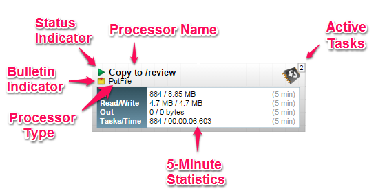
The image outlines the following elements:
-
Processor Type: NiFi provides several different types of Processors in order to allow for a wide range of tasks to be performed. Each type of Processor is designed to perform one specific task. The Processor type (PutFile, in this example) describes the task that this Processor performs. In this case, the Processor writes a FlowFile to disk - or “Puts” a FlowFile to a File.
-
Bulletin Indicator: When a Processor logs that some event has occurred, it generates a Bulletin to notify those who are monitoring NiFi via the User Interface. The DFM is able to configure which bulletins should be displayed in the User Interface by updating the “Bulletin level” field in the “Settings” tab of the Processor configuration dialog. The default value is
WARN, which means that only warnings and errors will be displayed in the UI. This icon is not present unless a Bulletin exists for this Processor. When it is present, hovering over the icon with the mouse will provide a tooltip explaining the message provided by the Processor as well as the Bulletin level. If the instance of NiFi is clustered, it will also show the Node that emitted the Bulletin. Bulletins automatically expire after five minutes. -
Status Indicator: Shows the current Status of the Processor. The following indicators are possible:
-
Running: The Processor is currently running.
-
Stopped: The Processor is valid and enabled but is not running.
-
Invalid: The Processor is enabled but is not currently valid and cannot be started. Hovering over this icon will provide a tooltip indicating why the Processor is not valid.
-
Disabled: The Processor is not running and cannot be started until it has been enabled. This status does not indicate whether or not the Processor is valid.
-
-
Processor Name: This is the user-defined name of the Processor. By default, the name of the Processor is the same as the Processor Type. In the example, this value is "Copy to /review".
-
Active Tasks: The number of tasks that this Processor is currently executing. This number is constrained by the “Concurrent tasks” setting in the “Scheduling” tab of the Processor configuration dialog. Here, we can see that the Processor is currently performing two tasks. If the NiFi instance is clustered, this value represents the number of tasks that are currently executing across all nodes in the cluster.
-
5-Minute Statistics: The Processor shows several different statistics in tabular form. Each of these statistics represents the amount of work that has been performed in the past five minutes. If the NiFi instance is clustered, these values indicate how much work has been done by all of the Nodes combined in the past five minutes. These metrics are:
-
In: The amount of data that the Processor has pulled from the queues of its incoming Connections. This value is represented as <count> / <size> where <count> is the number of FlowFiles that have been pulled from the queues and <size> is the total size of those FlowFiles' content. In this example, the Processor has pulled 884 FlowFiles from the input queues, for a total of 8.85 megabytes (MB).
-
Read/Write: The total size of the FlowFile content that the Processor has read from disk and written to disk. This provides valuable information about the I/O performance that this Processor requires. Some Processors may only read the data without writing anything while some will not read the data but will only write data. Others will neither read nor write data, and some Processors will both read and write data. In this example, we see that in the past five minutes, this Processor has read 4.7 MB of the FlowFile content and has written 4.7 MB as well. This is what we would expect, since this Processor simply copies the contents of a FlowFile to disk. Note, however, that this is not the same as the amount of data that it pulled from its input queues. This is because some of the files that it pulled from the input queues already exist in the output directory, and the Processor is configured to route FlowFiles to failure when this occurs. Therefore, for those files which already existed in the output directory, data was neither read nor written to disk.
-
Out: The amount of data that the Processor has transferred to its outbound Connections. This does not include FlowFiles that the Processor removes itself, or FlowFiles that are routed to connections that are auto-terminated. Like the “In” metric above, this value is represented as <count> / <size> where <count> is the number of FlowFiles that have been transferred to outbound Connections and <size> is the total size of those FlowFiles' content. In this example, all of the Relationships are configured to be auto-terminated, so no FlowFiles are reported as having been transferred Out.
-
Tasks/Time: The number of times that this Processor has been triggered to run in the past 5 minutes, and the amount of time taken to perform those tasks. The format of the time is <hour>:<minute>:<second>. Note that the amount of time taken can exceed five minutes, because many tasks can be executed in parallel. For instance, if the Processor is scheduled to run with 60 Concurrent tasks, and each of those tasks takes one second to complete, it is possible that all 60 tasks will be completed in a single second. However, in this case we will see the Time metric showing that it took 60 seconds, instead of 1 second. This time can be thought of as “System Time,” or said another way, this value is 60 seconds because that’s the amount of time it would have taken to perform the action if only a single concurrent task were used.
-
Anatomy of a Process Group
The Process Group provides a mechanism for grouping components together into a logical construct in order to organize the DataFlow in a way that makes it more understandable from a higher level. The following image highlights the different elements that make up the anatomy of a Process Group:
The Process Group consists of the following elements:
-
Name: This is the user-defined name of the Process Group. This name is set when the Process Group is added to the canvas. The name can later by changed by right-clicking on the Process Group and clicking the “Configure” menu option. In this example, the name of the Process Group is “Process Group ABC.”
-
Bulletin Indicator: When a child component of a Process Group emits a bulletin, that bulletin is propagated to the component’s parent Process Group, as well. When any component has an active Bulletin, this indicator will appear, allowing the user to hover over the icon with the mouse to see Bulletin.
-
Active Tasks: The number of tasks that are currently executing by the components within this Process Group. Here, we can see that the Process Group is currently performing one task. If the NiFi instance is clustered, this value represents the number of tasks that are currently executing across all nodes in the cluster.
-
Comments: When the Process Group is added to the canvas, the user is given the option of specifying Comments in order to provide information about the Process Group. The comments can later be changed by right-clicking on the Process Group and clicking the “Configure” menu option. In this example, the Comments are set to “Example Process Group.”
-
Statistics: Process Groups provide statistics about the amount of data that has been processed by the Process Group in the past 5 minutes as well as the amount of data currently enqueued within the Process Group. The following elements comprise the “Statistics” portion of a Process Group:
-
Queued: The number of FlowFiles currently enqueued within the Process Group. This field is represented as <count> / <size> where <count> is the number of FlowFiles that are currently enqueued in the Process Group and <size> is the total size of those FlowFiles' content. In this example, the Process Group currently has 1,738 FlowFiles enqueued; those FlowFiles have a total size of 350.03 megabytes (MB).
-
In: The number of FlowFiles that have been transferred into the Process Group through all of its Input Ports over the past 5 minutes. This field is represented as <count> / <size> where <count> is the number of FlowFiles that have entered the Process Group in the past 5 minutes and <size> is the total size of those FlowFiles' content. In this example, 686 FlowFiles have entered the Process Group and their total size is 214.01 MB.
-
Read/Write: The total size of the FlowFile content that the components within the Process Group have read from disk and written to disk. This provides valuable information about the I/O performance that this Process Group requires. In this example, we see that in the past five minutes, components within this Process Group have read 72.9 MB of the FlowFile content and have written 686.65 MB.
-
Out: The number of FlowFiles that have been transferred out of the Process Group through its Output Ports over the past 5 minutes. This field is represented as <count> / <size> where <count> is the number of FlowFiles that have exited the Process Group in the past 5 minutes and <size> is the total size of those FlowFiles' content. In this example, 657 FlowFiles have exited the Process Group and their total size is 477.74 MB.
-
-
Component Counts: The Component Counts element provides information about how many components of each type exist within the Process Group. The following provides information about each of these icons and their meanings:
-
Input Ports: The number of Input Ports that exist directly within this Process Group. This does not include any Input Ports that exist within child Process Groups, as child groups' ports cannot be accessed directly.
-
Output Ports: The number of Output Ports that exist directly within this Process Group. This does not include any Output Ports that exist within child Process Group as child groups' ports cannot be accessed directly.
-
Transmitting Ports: The number of Remote Process Group Ports that currently are configured to transmit data to remote instances of NiFi or pull data from remote instances of NiFi.
-
Non-Transmitting Ports: The number of Remote Process Group Ports that are currently connected to components within this Process Group but currently have their transmission disabled.
-
Running Components: The number of Processors, Input Ports, and Output Ports that are currently running within this Process Group.
-
Stopped Components: The number of Processors, Input Ports, and Output Ports that are currently not running but are valid and enabled. These components are ready to be started.
-
Invalid Components: The number of Processors, Input Ports, and Output Ports that are enabled but are currently not in a valid state. This may be due to misconfigured properties or missing Relationships.
-
Disabled Components: The number of Processors, Input Ports, and Output Ports that are currently disabled. These components may or may not be valid. If the Process Group is started, these components will not cause any errors but will not be started.
-
Anatomy of a Remote Process Group
When creating a DataFlow, it is often necessary to transfer data from one instance of NiFi to another. In this case, the remote instance of NiFi can be thought of as a Process Group. For this reason, NiFi provides the concept of a Remote Process Group. From the User Interface, the Remote Process Group looks similar to the Process Group. However, rather than showing information about the inner workings and state of a Remote Process Group, such as queue sizes, the information rendered about a Remote Process Group is related to the interaction that occurs between this instance of NiFi and the remote instance.
The image above shows the different elements that make up a Remote Process Group. Here, we provide an explanation of the icons and details about the information provided.
-
Transmission Status: The Transmission Status indicates whether or not data Transmission between this instance of NiFi and the remote instance is currently enabled. The icon shown will be the Transmission Enabled icon ( ) if any of the Input Ports or Output Ports is currently configured to transmit or the Transmission Disabled icon ( ) if all of the Input Ports and Output Ports that are currently connected are stopped.
-
Remote Instance Name: This is the name of the NiFi instance that was reported by the remote instance. When the Remote Process Group is first created, before this information has been obtained, the URL of the remote instance will be shown here instead.
-
Remote Instance URL: This is the URL of the remote instance that the Remote Process Group points to. This URL is entered when the Remote Process Group is added to the canvas and it cannot be changed.
-
Secure Indicator: This icon indicates whether or not communications with the remote NiFi instance are secure. If communications with the remote instance are secure, this will be indicated by the “locked” icon (
 ). If the communications are not secure, this will be indicated by the “unlocked” icon (
). If the communications are secure, this instance of NiFi will not be able to communicate with the
remote instance until an administrator for the remote instance grants access. Whenever the Remote Process
Group is added to the canvas, this will automatically initiate a request to have a user for this instance of NiFi created on the
remote instance. This instance will be unable to communicate with the remote instance until an administrator
on the remote instance adds the user to the system and adds the “NiFi” role to the user.
In the event that communications are not secure, the Remote Process Group is able to receive data from anyone,
and the data is not encrypted while it is transferred between instances of NiFi.
). If the communications are not secure, this will be indicated by the “unlocked” icon (
). If the communications are secure, this instance of NiFi will not be able to communicate with the
remote instance until an administrator for the remote instance grants access. Whenever the Remote Process
Group is added to the canvas, this will automatically initiate a request to have a user for this instance of NiFi created on the
remote instance. This instance will be unable to communicate with the remote instance until an administrator
on the remote instance adds the user to the system and adds the “NiFi” role to the user.
In the event that communications are not secure, the Remote Process Group is able to receive data from anyone,
and the data is not encrypted while it is transferred between instances of NiFi. -
Input Ports: This section shows three pieces of information:
-
Input Ports: The number of Input Ports that are available to send data to on the remote instance of NiFi. If the remote instance is secure, only the ports to which this instance of NiFi has been granted access will be counted.
-
Transmitting Ports: The number of Input Ports to which this NiFi is connected and currently configured to send data to. Ports can be turned on and off by enabling and disabling transmission on the Remote Process Group (see Remote Process Group Transmission) or via the Individual Port Transmission dialog.
-
Non-Transmitting Ports: The number of Input Ports to which this NiFi is connected but is not currently configured to send data to. Ports can be turned on and off by enabling and disabling transmission on the Remote Process Group (see Remote Process Group Transmission) or via the Individual Port Transmission dialog.
-
-
Output Ports: Similar to the “Input Ports” section above, this element shows three pieces of information:
-
Output Ports: The number of Output Ports that are available to pull data from the remote instance of NiFi. If the remote instance is secure, only the ports to which this instance of NiFi has been granted access will be counted.
-
Transmitting Ports: The number of Output Ports from which this NiFi is connected and currently configured to pull data from. Ports can be turned on and off by enabling and disabling transmission on the Remote Process Group (see Remote Process Group Transmission) or via the Individual Port Transmission dialog.
-
Non-Transmitting Ports: The number of Output Ports to which this NiFi is connected but is not currently configured to pull data from. Ports can be turned on and off by enabling and disabling transmission on the Remote Process Group (see Remote Process Group Transmission) or via the Individual Port Transmission dialog.
-
-
5-Minute Statistics: Two statistics are shown for Remote Process Groups: Sent and Received. Both of these are in the format <count> / <size> where <count> is the number of FlowFiles that have been sent or received in the previous five minutes and <size> is the total size of those FlowFiles' content.
-
Comments: The Comments that are provided for a Remote Process Group are not comments added by the users of this NiFi but rather the Comments added by the administrators of the remote instance. These comments indicate the purpose of the NiFi instance as a whole.
-
Last Refreshed Time: The information that is pulled from a remote instance and rendered on the Remote Process Group in the User Interface is periodically refreshed in the background. This element indicates the time at which that refresh last happened, or if the information has not been refreshed for a significant amount of time, the value will change to indicate Remote flow not current. NiFi can be triggered to initiate a refresh of this information by right-clicking on the Remote Process Group and choosing the “Refresh flow” menu item.
Summary Page
While the NiFi canvas is useful for understanding how the configured DataFlow is laid out, this view is not always optimal when trying to discern the status of the system. In order to help the user understand how the DataFlow is functioning at a higher level, NiFi provides a Summary page. This page is available in the Management Toolbar in the top-right corner of the User Interface. See the NiFi User Interface section for more information about the location of this toolbar.
The Summary Page is opened by clicking the Summary icon ( 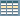 ) from the Management Toolbar. This opens the Summary table dialog:
This dialog provides a great deal of information about each of the components on the canvas. Below, we have annotated the different elements within the dialog in order to make the discussion of the dialog easier.
The Summary page consists mostly of a table that provides information about each of the components on the canvas. Above this table is a set of five tabs that can be used to view the different types of components. The information provided in the table is the same information that is provided for each component on the canvas. Each of the columns in the table may be sorted by double-clicking on the heading of the column. For more on the types of information displayed, see the sections Anatomy of a Processor, Anatomy of a Process Group, and Anatomy of a Remote Process Group above.
The Summary page also includes the following elements:
-
Bulletin Indicator: As in other places throughout the User Interface, when this icon is present, hovering over the icon will provide information about the Bulletin that was generated, including the message, the severity level, the time at which the Bulletin was generated, and (in a clustered environment) the node that generated the Bulletin. Like all the columns in the Summary table, this column where bulletins are shown may be sorted by double-clicking on the heading so that all the currently existing bulletins are shown at the top of the list.
-
Details: Clicking the Details icon will provide the user with the details of the component. This dialog is the same as the dialog provided when the user right-clicks on the component and chooses the “View configuration” menu item.
-
Go To: Clicking this button will close the Summary page and take the user directly to the component on the NiFi canvas. This may change the Process Group that the user is currently in. This icon is not available if the Summary page has been opened in a new browser tab or window (by clicking the “Pop Out” button, as described below).
-
Stats History: Clicking the Stats History icon will open a new dialog that shows a historical view of the statistics that are rendered for this component. See the section Historical Statistics of a Component for more information.
-
Refresh: The Refresh button allows the user to refresh the information displayed without closing the dialog and opening it again. The time at which the information was last refreshed is shown just to the right of the Refresh button. The information on the page is not automatically refreshed.
-
Filter: The Filter element allows users to filter the contents of the Summary table by typing in all or part of some criteria, such as a Processor Type or Processor Name. The types of filters available differ according to the selected tab. For instance, if viewing the Processor tab, the user is able to filter by name or by type. When viewing the Connections tab, the user is able to filter by source name, destination name, or Connection name. The filter is automatically applied when the contents of the text box are changed. Below the text box is an indicator of how many entries in the table match the filter and how many entries exist in the table.
-
Pop-Out: When monitoring a flow, it is helpful to be able to open the Summary table in a separate browser tab or window. The Pop-Out button, next to the Close button, will cause the entire Summary dialog to be opened in a new browser tab or window (depending on the configuration of the browser). Once the page is “popped out”, the dialog is closed in the original browser tab/window. In the new tab/window, the Pop-Out button and the Go-To button will no longer be available.
-
System Diagnostics: The System Diagnostics window provides information about how the system is performing with respect to system resource utilization. While this is intended mostly for administrators, it is provided in this view because it does provide a summary of the system. This dialog shows information such as CPU utilization, how full the disks are, and Java-specific metrics, such as memory size and utilization, as well as Garbage Collection information.
Historical Statistics of a Component
While the Summary table and the canvas show numeric statistics pertaining to the performance of a component over the past five minutes, it is often useful to have a view of historical statistics as well. This information is available by right-clicking on a component and choosing the “Stats” menu option or by clicking on the Stats History in the Summary page (see Summary Page for more information).
The amount of historical information that is stored is configurable in the NiFi properties but defaults to 24 hours. When the Stats dialog is opened, it provides a graph of historical statistics:
The left-hand side of the dialog provides information about the component that the stats are for, as well as a textual representation of the statistics being graphed. The following information is provided on the left-hand side:
-
Id: The ID of the component for which the stats are being shown.
-
Group Id: The ID of the Process Group in which the component resides.
-
Name: The Name of the Component for which the stats are being shown.
-
Component-Specific Entries: Information is shown for each different type of component. For example, for a Processor, the type of Processor is displayed. For a Connection, the source and destination names and IDs are shown.
-
Start: The earliest time shown on the graph.
-
End: The latest time shown on the graph.
-
Min/Max/Mean: The minimum, maximum, and mean (arithmetic mean, or average) values are shown. These values are based only on the range of time selected, if any time range is selected. If this instance of NiFi is clustered, these values are shown for the cluster as a whole, as well as each individual node. In a clustered environment, each node is shown in a different color. This also serves as the graph’s legend, showing the color of each node that is shown in the graph. Hovering the mouse over the Cluster or one of the nodes in the legend will also make the corresponding node bold in the graph.
The right-hand side of the dialog provides a drop-down list of the different types of metrics to render in the graphs below. The top graph is larger so as to provide an easier-to-read rendering of the information. In the bottom-right corner of this graph is a small handle ( ) that can be dragged to resize the graph. The blank area of the dialog above this graph can also be dragged around to move the entire dialog.
The bottom graph is much shorter and provides the ability to select a time range. Selecting a time range here will cause the top graph to show only the time range selected, but in a more detailed manner. Additionally, this will cause the Min/Max/Mean values on the left-hand side to be recalculated. Once a selection has been created by dragging a rectangle over the graph, double-clicking on the selected portion will cause the selection to fully expand in the vertical direction. I.e., it will select all values in this time range. Clicking on the bottom graph without dragging will remove the selection.
Templates
DFMs have the ability to build very large and complex DataFlows using NiFi. This is achieved by using the basic components: Processor, Funnel, Input/Output Port, Process Group, and Remote Process Group. These can be thought of as the most basic building blocks for constructing a DataFlow. At times, though, using these small building blocks can become tedious if the same logic needs to be repeated several times.
To solve this issue, NiFi provides the concept of a Template. A Template is a way of combining these basic building blocks into larger building blocks. Once a DataFlow has been created, parts of it can be formed into a Template. This Template can then be dragged onto the canvas, or can be exported as an XML file and shared with others. Templates received from others can then be imported into an instance of NiFi and dragged onto the canvas.
Creating a Template
To create a Template, select the components that are to be a part of the template, and then click the “Create Template” ( ) button in the Actions Toolbar (See NiFi User Interface for more information on the Actions Toolbar).
Clicking this button without selecting anything will create a Template that contains all of the contents of the current Process Group. This means that creating a Template with nothing selected while on the Root Process Group will create a single Template that contains the entire flow.
After clicking this button, the user is prompted to provide a name and an optional description for the template. Each template must have a unique name. After entering the name and optional description, clicking the Create button will generate the template and notify the user that the template was successfully created, or provide an appropriate error message if unable to create the template for some reason.
Instantiating a Template
Once a Template has been created (see Creating a Template) or imported (see Importing a Template), it is ready to be instantiated, or added to the canvas. This is accomplished by dragging the Template icon ( ) from the Components Toolbar (see NiFi User Interface) onto the canvas.
This will present a dialog to choose which Template to add to the canvas. After choosing the Template to add, simply click the “Add” button. The Template will be added to the canvas with the upper-right-hand side of the Template being placed wherever the user dropped the Template icon.
This leaves the contents of the newly instantiated Template selected. If there was a mistake, and this Template is no longer wanted, it may be deleted.
Managing Templates
One of the most powerful features of NiFi Templates is the ability to easily export a Template to an XML file and to import a Template that has already been exported. This provides a very simple mechanism for sharing parts of a DataFlow with others. The Management Toolbar (see NiFi User Interface) has a button for managing Templates ( ). Clicking this button opens a dialog that allows the user to see all of the Templates that are currently available, filter the templates to see only those of interest, and import, export, and delete Templates.
Importing a Template
After receiving a Template that has been exported from another NiFi, the first step needed to use the template is to import the template into this instance of NiFi. From the Template Management dialog (see Managing Templates), click the “Browse” button. This provides a File Selection dialog that allows the user to choose which template file to upload. Select the file and click Open. The “Browse” button is replaced by an “Import” button and a “Cancel” button. Clicking the “Import” button will attempt to import the Template into this instance of NiFi. If unable to import the Template, an error message will appear in red next to the “Browse” button. Otherwise, the Template will be added to the table and the “Browse” button will reappear.
Exporting a Template
Once a Template has been created, it can be shared with others in the Template Management page (see Managing Templates). To export a Template, locate the Template in the table. The Filter in the top-right corner can be used to help find the appropriate Template if several are available. Then click the Export or Download button ( ). This will download the template as an XML file to your computer. This XML file can then be sent to others and imported into other instances of NiFi (see Importing a Template).
Removing a Template
Once it is decided that a Template is no longer needed, it can be easily removed from the Template Management page (see Managing Templates). To delete a Template, locate it in the table (the Filter in the top-right corner may be used to find the appropriate Template if several are available) and click the Delete button ( ). This will prompt for confirmation. After confirming the deletion, the Template will be removed from this table and will no longer be available to add to the canvas.
Data Provenance
While monitoring a dataflow, users often need a way to determine what happened to a particular data object (FlowFile). NiFi’s Data Provenance page provides that information. Because NiFi records and indexes data provenance details as objects flow through the system, users may perform searches, conduct troubleshooting and evaluate things like dataflow compliance and optimization in real time. By default, NiFi updates this information every five minutes, but that is configurable.
To access the Data Provenance page, click the Data Provenance button in the Management Toolbar (see NiFi User Interface) ( ). Clicking this button opens a dialog window that allows the user to see the most recent Data Provenance information available, search the information for specific items, and filter the search results. It is also possible to open additional dialog windows to see event details, replay data at any point within the dataflow, and see a graphical representation of the data’s lineage, or path through the flow. (These features are described in depth below.)
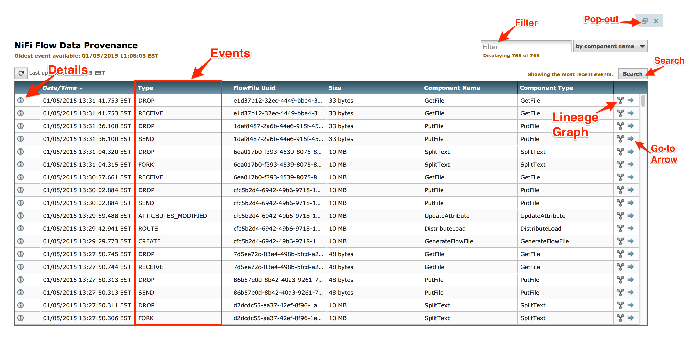
Each point in a dataflow where a FlowFile is processed in some way is considered a "processing event". Various types of processing events occur, depending on the dataflow design. For example, when data is brought into the flow, a RECEIVE event occurs, and when data is sent out of the flow, a SEND event occurs. Other types of processing events may occur, such as if the data is cloned (CLONE event), routed (ROUTE event), modified (CONTENT_MODIFIED or ATTRIBUTES_MODIFIED event), split (FORK event), combined with other data objects (JOIN event), and ultimately removed from the flow (DROP event).
Searching for Events
One of the most common tasks performed in the Data Provenance page is a search for a given FlowFile to determine what happened to it. To do this,
click the Search button in the upper-right corner of the Data Provenance page. This opens a dialog window with parameters that the user can
define for the search. The parameters include the processing event of interest, distinguishing characteristics about the FlowFile or the component that produced the event, the timeframe within which to search, and the size of the FlowFile.
For example, to determine if a particular FlowFile was received, search for an Event Type of "RECEIVE" and include an identifier for the FlowFile, such as its uuid or filename. The asterisk (*) may be used as a wildcard for any number of characters. So, to determine whether a FlowFile with "ABC" anywhere in its filename was received at any time on Jan. 6, 2015, the search shown in the following image could be performed:
Details of an Event
In the far-left column of the Data Provenance page, there is a View Details icon for each event ( ). Clicking this button opens a dialog window with three tabs: Details, Attributes, and Content.
The Details tab shows various details about the event, such as when it occurred, what type of event it was, and the component that produced the event. The information that is displayed will vary according to the event type. This tab also shows information about the FlowFile that was processed. In addition to the FlowFile’s UUID, which is displayed on the left side of the Details tab, the UUIDs of any parent or children FlowFiles that are related to that FlowFile are displayed on the right side of the Details tab.
The Attributes tab shows the attributes that exist on the FlowFile as of that point in the flow. In order to see only the attributes that were modified as a result of the processing event, the user may select the checkbox next to "Only show modified" in the upper-right corner of the Attributes tab.
Replaying a FlowFile
A DFM may need to inspect a FlowFile’s content at some point in the dataflow to ensure that it is being processed as expected. And if it
is not being processed properly, the DFM may need to make adjustments to the dataflow and replay the FlowFile again. The Content tab of the View Details dialog window is where the DFM can do these things. The Content tab shows information about the FlowFile’s content, such as its location in the Content Repository
and its size. In addition, it is here that the user may click the Download button in order to download a copy of the FlowFile’s content as it existed
at this point in the flow. The user may also click the Submit button to replay the FlowFile at this point in the flow. Upon clicking Submit,
the FlowFile is sent to the connection feeding the component that produced this processing event.
Viewing FlowFile Lineage
It is often useful to see a graphical representation of the lineage or path a FlowFile took within the dataflow. To see a FlowFile’s lineage, click on the "Show Lineage" icon ( ) in the far-right column of the Data Provenance table. This opens a graph displaying the FlowFile ( ) and the various processing events that have occurred. The selected event will be highlighted in yellow. It is possible to right-click on any event to see that event’s details (See Details of an Event) To see how the lineage evolved over time, click the slider at the bottom-left of the window and move it to the left to see the state of the lineage at earlier stages in the dataflow.
Find Parents
Sometimes, a user may need to track down the original FlowFile that another FlowFile was spawned from. For example, when a FORK or CLONE event occurs, NiFi keeps track of the parent FlowFile that produced other FlowFiles, and it is possible to find that parent FlowFile in the Lineage. Right-click on the event in the lineage graph and select "Find parents" from the context menu.
Once "Find parents" is selected, the graph is re-drawn to show the parent FlowFile and its lineage as well as the child and its lineage.
Expanding an Event
In the same way that it is useful to find a parent FlowFile, the user may also want to determine what children were spawned from a given FlowFile. To do this, right-click on the event in the lineage graph and select "Expand" from the context menu.
Once "Expand" is selected, the graph is re-drawn to show the children and their lineage.
Other Management Features
In addition to the Summary Page, Data Provenance Page, Template Management Page, and Bulletin Board Page, there are other tools in the Management Toolbar (See NiFi User Interface) that are useful to the DFM. The Flow Configuration History, which is available by clicking on the clock icon ( ) in the Management Toolbar, shows all the changes that have been made to the dataflow. The history can aid in troubleshooting, such as if a recent change to the dataflow has caused a problem and needs to be fixed. The DFM can see what changes have been made and adjust the flow as needed to fix the problem. While NiFi does not have an "undo" feature, the DFM can make new changes to the dataflow that will fix the problem.
Two other tools in the Management Toolbar are the Controller Settings page ( ) and the Users page ( ). The Controller Settings page provides the ability to change the name of the NiFi instance, add comments describing the NiFi instance, set the maximum number of threads that are available to the application, and create a back-up copy of the dataflow(s) currently on the canvas. It also provides tabs where DFMs may add and configure Controller Services and Reporting Tasks (see Controller Services and Reporting Tasks). The Users page is used to manage user access, which is described in the Admin Guide.